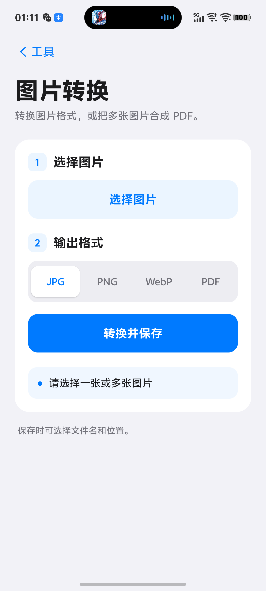
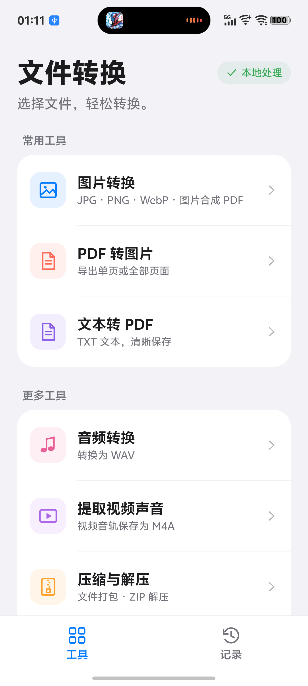

图片转换
JPG、PNG、WebP 互转，多张图片可排序合成 PDF。
最多 20 张 · 800 万像素保护图片、PDF、文本、音频、视频和 ZIP，一个简洁的本地工具。无需注册，不含广告，也不会上传你的文件。


使用安卓系统文件界面打开和保存，操作方式与手机原生应用一致。
JPG、PNG、WebP 互转，多张图片可排序合成 PDF。
最多 20 张 · 800 万像素保护预览 PDF 页面，导出第一页、全部页面或指定页码。
支持 2-5,8 这样的页码范围UTF-8 TXT 自动分页转 PDF；Word 通过办公软件打印为 PDF。
TXT 最大 2 MB · 最多 200 页音频转换为 WAV，从含 AAC 音轨的视频中提取 M4A。
支持范围由手机编解码器决定多个文件打包，解压前预览内容，并保留原目录结构。
含解压大小和路径安全保护查看最近结果，重新打开、分享、删除或重新关联文件。
记录只保存在你的手机中你可以在应用里选择文件，也可以在相册、文件管理器中点“分享”，再选择“文件转换器”。转换时会显示进度，支持取消、失败重试，并自动清理未完成文件。
在安卓手机上打开本网站，点击“下载 Android APK”。
如果系统提示，请允许浏览器或文件管理器“安装未知应用”。安装结束后可关闭该权限。
应用名称应为“文件转换器”，包名为 com.zephyr.fileconverter，版本为 1.4。
BC96EB18A15940EDF71EBF8B47AC9CC29DB952F47E246D5AECCC1FEE20A71B71vivo 手机可能会显示来源提醒，这是侧载 APK 的常见系统提示。请只从本页面下载，并核对上面的 SHA-256。
⌁本地转换没有云端服务器
○无账号打开即可使用
×无广告没有跟踪代码